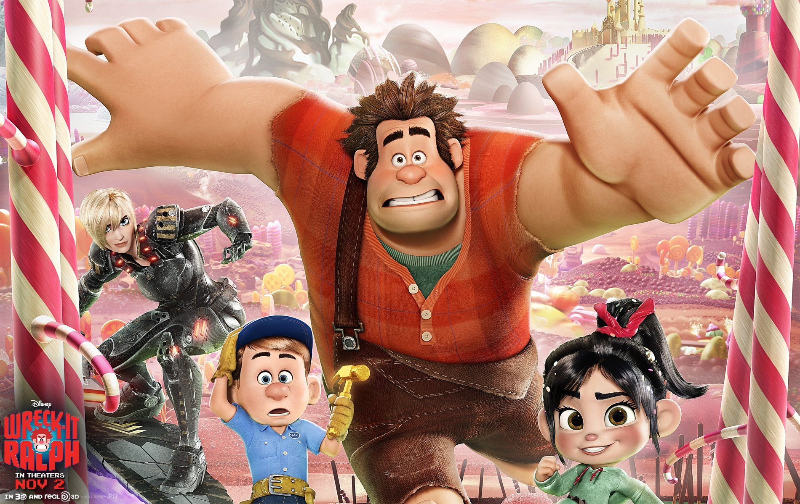

About Ralph
Ralph is awesome! He's an 8-bit videogame bad guy who travels the length of the arcade to prove that he's a good guy.
Ralph and his friends
Ralph's characterstics
- He's got big hands
- He's treated as a bad-ass
- He's trying to be a good guy
Ralph's Friends
Ralph has awsome friends.I think his best friend is glitch. She's awsome. Click on the links below to read more about them: